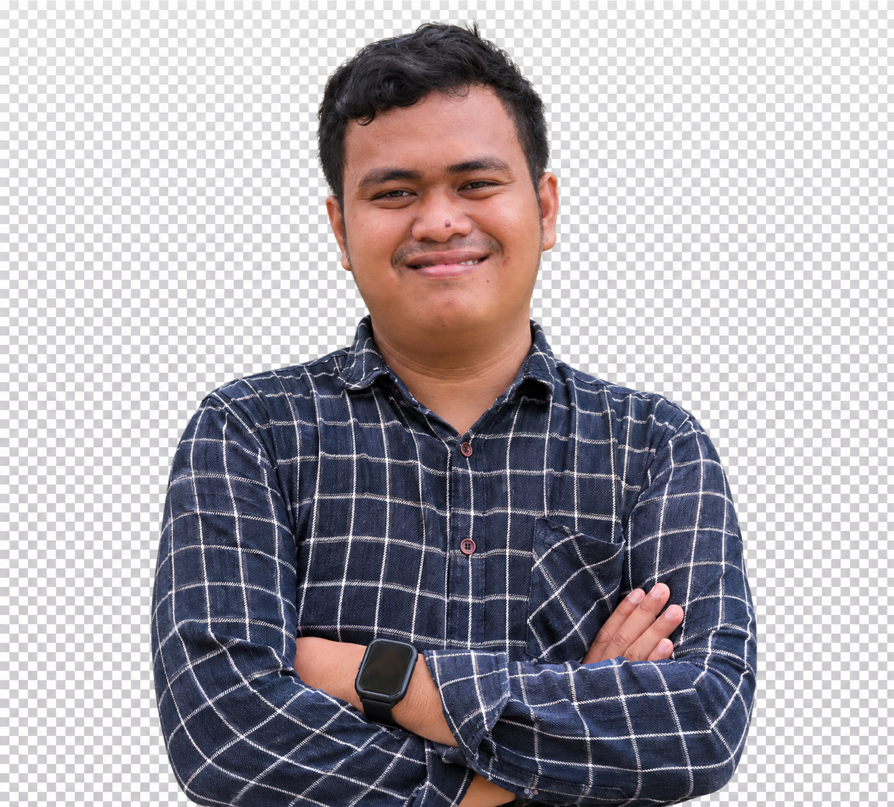
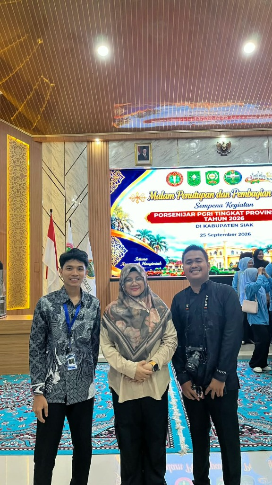

Wahyu Ardian
Visual Alchemist.
Saya adalah mahasiswa Universitas Lancang Kuning jurusan Bisnis Digital (Angkatan 2024) dengan keahlian mendalam di bidang Editing Visual dan berpengalaman sebagai Desain Grafis profesional. Menggabungkan estetika abstrak modern hitam-biru dengan nilai strategis yang nyata bagi bisnis klien.

Perangkat Lunak & Toolkit Desain
Penguasaan mendalam atas berbagai software grafis dan fotografi standar industri untuk menghadirkan visual kelas atas.
Adobe Photoshop
Manipulasi foto visual, retouching gambar beresolusi tinggi, pembuatan mockup produk, color grading, dan compositing kompleks.
Adobe Illustrator
Perancangan logo vektor presisi, maskot ilustrasi, ikonografi digital, tipografi kreatif, dan materi visual skala tak terbatas.
CorelDRAW Graphics
Standar industri percetakan untuk layout spanduk raksasa, baliho, kartu nama, brosur, separasi warna CMYK, dan persiapan file siap cetak.
Premiere Pro & CapCut
Editing visual video dinamis untuk TikTok, Instagram Reels, dokumentasi acara resmi, transisi mulus, pacing audio, dan efek visual menarik.
Canva & Figma Pro
Eksekusi cepat template media sosial, presentasi bisnis digital modern, prototyping visual, dan kolaborasi tim secara real-time.
Event Photography
Penguasaan kamera profesional untuk event besar: menangkap momen penting, komposisi dinamis, pencahayaan panggung, dan liputan resmi.
Profil & Ringkasan Diri
Mengenal latar belakang, komitmen profesional, dan orientasi karir Wahyu Ardian di industri kreatif digital.
Dedikasi & Filosofi Kreatif
Saya adalah mahasiswa Universitas Lancang Kuning (UNILAK) angkatan 2024 program studi Bisnis Digital, yang telah aktif menekuni dunia Desain Grafis dan Editing Visual sejak tahun 2021.
Pengalaman kerja saya ditempa melalui industri percetakan nyata di Family Printing, agensi kreatif digital di CMB MEDIA, serta dipercaya sebagai fotografer liputan resmi dalam perhelatan akbar Porsenijar PGRI Provinsi Riau 2026 dan wisuda Universitas Lancang Kuning.
Bagi saya, perpaduan komposisi visual yang kuat dan ketajaman strategi bisnis adalah kunci utama melahirkan karya yang berkesan dan menggerakkan audiens.
Informasi Resmi
- Nama Lengkap Wahyu Ardian
- Domisili PT. Bina Pitri, Kampar, Riau
- Universitas Universitas Lancang Kuning
- Program Studi Bisnis Digital (Angkatan 2024)
- Karakter Spesialis Exp Lane (Disiplin & Ketahanan)
- Email Resmi Wahyuofficial280803@gmail.com
- WhatsApp 083832412105
Pengalaman Kerja & Kepanitiaan
Rekam jejak kontribusi profesional dalam dunia kerja, agensi media, dan organisasi resmi.
Bertanggung jawab penuh dalam meliput dan mendokumentasikan rangkaian kegiatan akbar Pekan Olahraga dan Seni Tenaga Kependidikan (Porsenijar) tingkat Provinsi Riau di Kabupaten Siak. Menghasilkan arsip foto berkualitas tinggi, liputan panggung malam penutupan, kurasi visual cepat untuk media publikasi resmi, serta dokumentasi protokoler.
Bertugas dalam tim dokumentasi visual untuk mengabadikan momen bersejarah prosesi kelulusan wisudawan/wisudawati Universitas Lancang Kuning. Menangani pengambilan foto portrait, liputan panggung kehormatan senat universitas, serta pengolahan visual pasca-acara secara profesional.
Berperan sebagai kreator visual inti yang merancang berbagai materi branding, mockup 3D jersey dan apparel olahraga, feed promosi digital, konten multimedia, video promosi berdurasi pendek, serta aset visual periklanan klien dengan konsep modern, eye-catching, dan siap produksi cetak sublimasi.
Bertugas mengeksekusi kebutuhan desain percetakan komersial secara langsung, mulai dari layout spanduk outdoor, standing banner promosi, label packaging kemasan botol, kartu nama, brosur, hingga koreksi warna CMYK pra-cetak guna menjamin mutu cetak tajam 300 DPI tanpa cacat produksi.
Riwayat Pendidikan
Jejak pendidikan formal dan vokasi terapan yang membentuk fondasi intelektual serta keahlian praktis.
Mempelajari integrasi antara ekosistem bisnis modern, pemasaran digital, perancangan antarmuka pengguna, strategi konten visual komersial, serta analitika bisnis berbasis data di era teknologi 4.0.
Pendidikan vokasi terapan yang mematangkan keahlian praktis, kedisiplinan kerja, etos profesional, serta dasar-dasar operasional industri karir modern.
Membangun karakter kepemimpinan, kemampuan kerja sama tim, komunikasi publik, serta mulai aktif mengeksplorasi minat dalam seni visual dan multimedia.
Fase penanaman disiplin belajar dan keterlibatan aktif dalam kegiatan ekstrakurikuler sekolah.
Pondasi awal pendidikan karakter, kejujuran, dan semangat belajar tinggi sejak usia dini.
Matriks Keahlian Profesional
Kombinasi antara kompetensi teknis desain grafis dan ketangguhan mentalitas kerja tim.
Hard Skills (Keahlian Teknis)
Soft Skills (Karakter & Sinergi)
Portofolio & Stasiun QR Interaktif
Pindai barcode interaktif di bawah menggunakan kamera ponsel Anda atau telusuri galeri karya terpilih.
Pindai QR Code untuk Membuka Portofolio Lengkap
Audiens, calon klien, dan perekrut dapat langsung mengarahkan kamera smartphone ke barcode di samping untuk menjelajahi galeri portofolio lengkap berisi arsip karya desain grafis, visual editing, dan foto dokumentasi event Wahyu Ardian.


Malam Penutupan Porsenijar PGRI Riau 2026
Dokumentasi fotografi panggung Malam Penutupan dan Pembagian Hadiah Sempena Kegiatan PORSENIJAR PGRI Tingkat Provinsi Riau Tahun 2026 di Kabupaten Siak (25 September 2026). Bertugas mengabadikan momen acara akbar, protokoler pejabat, dan publikasi media resmi.

Wisuda Sarjana LXXIII & Magister XXIII UNILAK
Dokumentasi fotografi resmi Sidang Senat Terbuka Wisuda Sarjana LXXIII & Magister XXIII Universitas Lancang Kuning. Bertugas mengabadikan prosesi pelantikan wisudawan/ti, portrait kelulusan, dan dokumentasi protokoler senat universitas.


Desain Spanduk Outdoor Saung Kopi (Nasi Bakar Teteh)
Koleksi 8 portofolio cetak Family Printing (Spanduk Saung Kopi, Spanduk Catering, 3D Mockup Buku Katalog, Cover Flat Katalog 2025, X-Banner Sebano Shashia, Roll Banner Promo 35K, Label Kemasan Botol Kopi, dan Display Banner Menu). Geser ke kiri/kanan atau klik tombol panah untuk menjelajahi karya.

Short-Form Video & Audio Synchronization
Editing video vertikal untuk TikTok dan Instagram Reels dengan pemilihan musik berirama, beat matching, transisi halus, dan animasi tipografi.

Desain Maskot & Banner Turnamen Esports
Pembuatan visual banner turnamen Mobile Legends dengan nuansa futuristik, mencerminkan ketangguhan mental seorang pejuang Exp Lane.